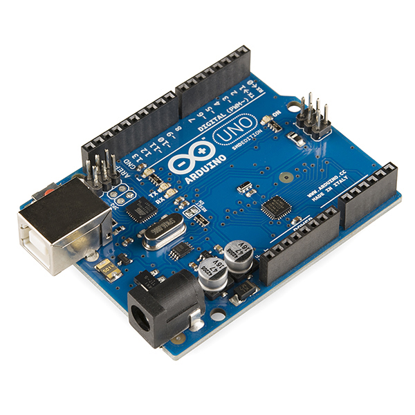
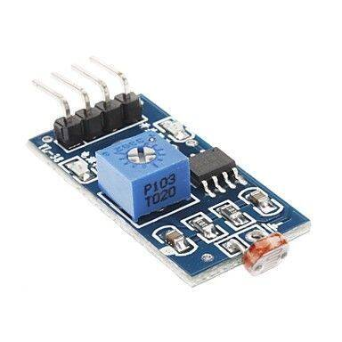
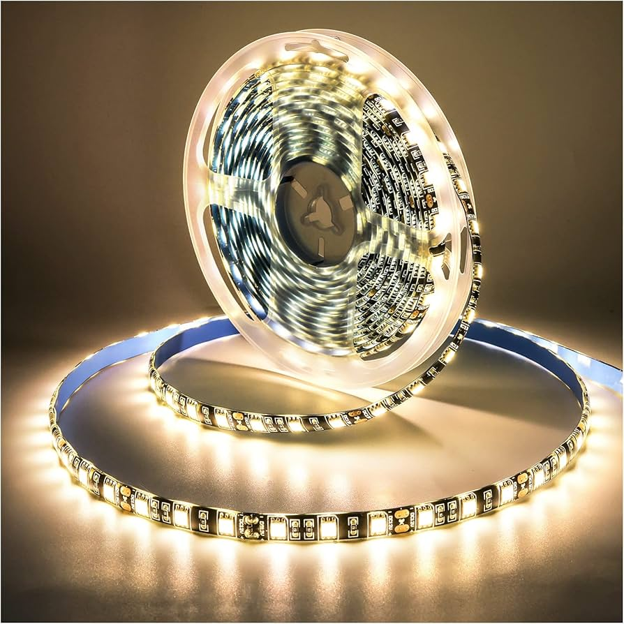
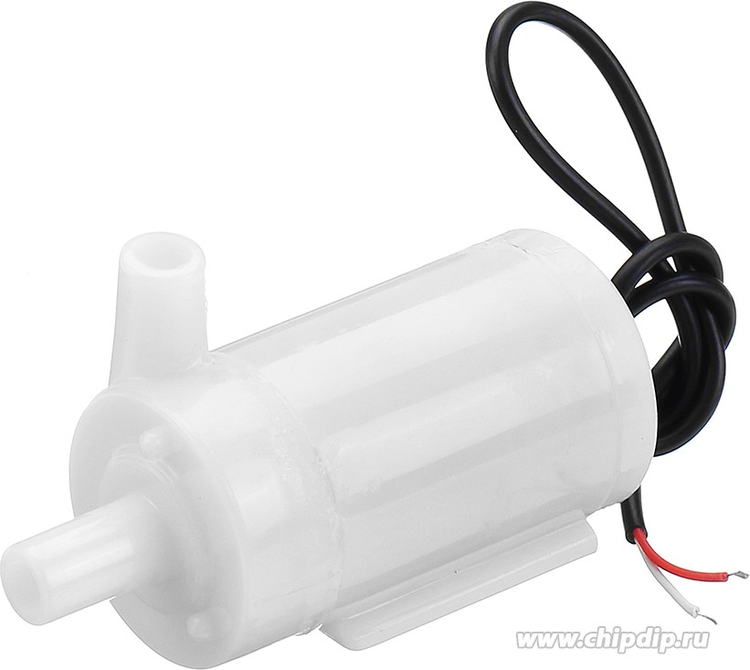
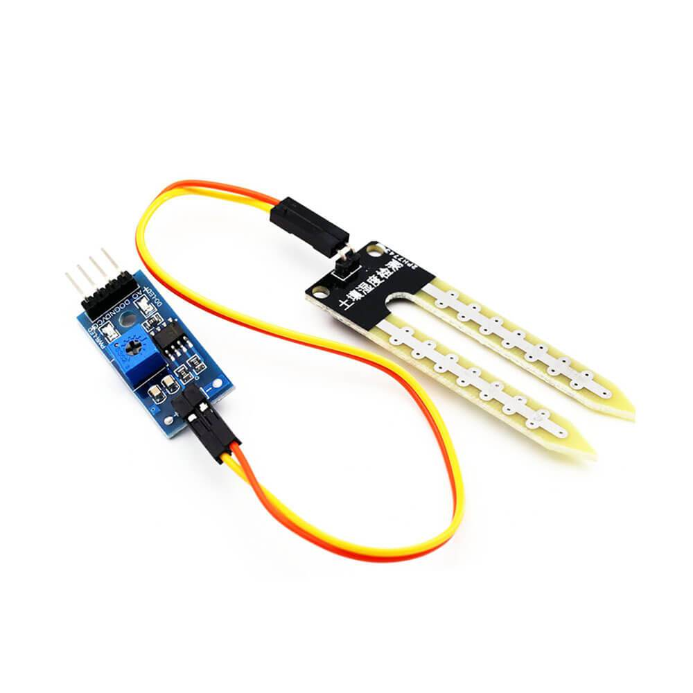
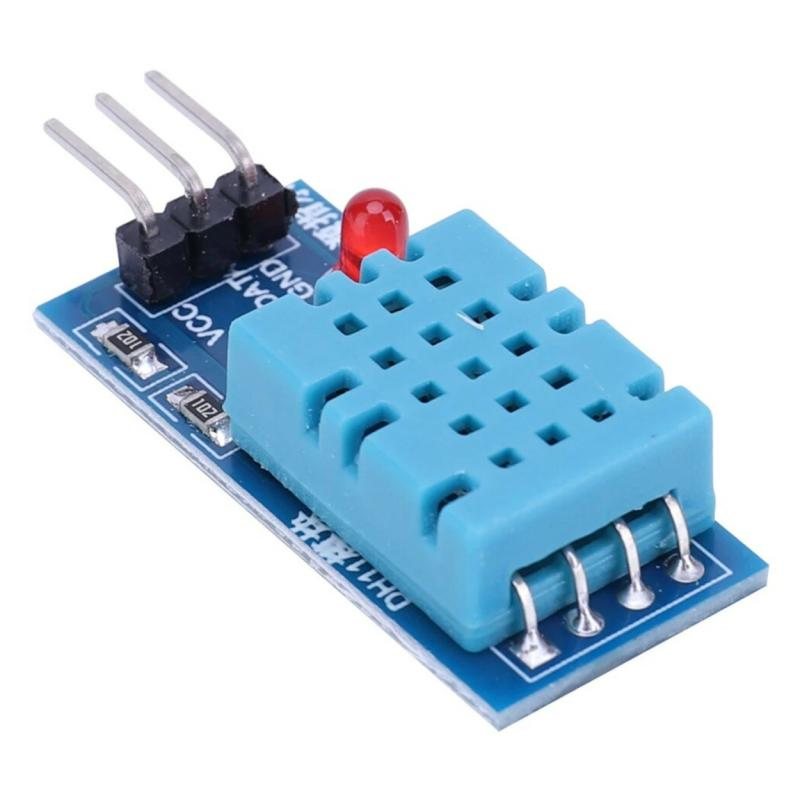
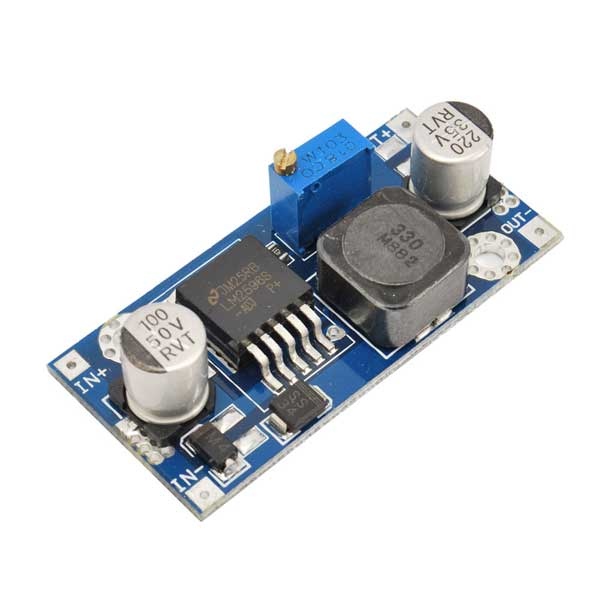
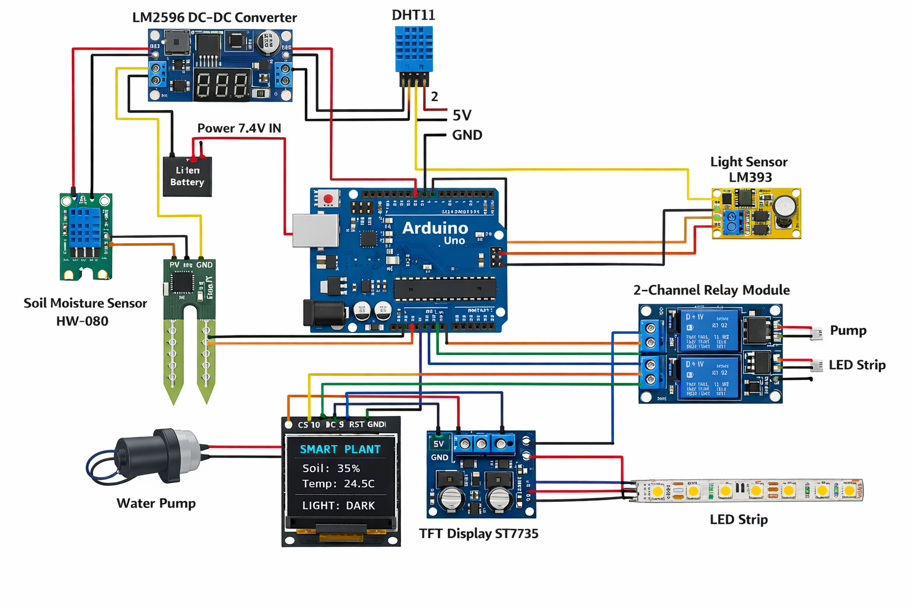

Primary Objectives
Learning Goal: My mission was to master the integration of hardware and software. I aimed to understand the C++ programming language within the Arduino environment, learning how to write efficient algorithms that respond to real-time environmental data. Beyond coding, I focused on electrical safety, voltage step-down techniques, and structural engineering using plywood.
Product Goal: To build a fully autonomous ecosystem for indoor plants. The goal was to eliminate human error in plant maintenance. The product serves as a reliable "automated gardener" that monitors soil hydration and light availability, activating irrigation and lighting only when necessary. The design had to be visually striking, professional, and durable.
Approaches to Learning
Self-Management: This project required rigorous time management. I utilized an Action Plan to navigate from initial research in October to the final assembly in February. Even when components failed, I maintained a strict schedule to ensure a 10-page report and a functional prototype were ready for the exhibition.
Research: I practiced high-level information literacy by conducting CARDS analysis on technical suppliers like medsvet.kz. This research was vital for selecting the correct DC-DC converters to protect my Arduino from high-voltage damage.

Arduino Uno R3
The "Brain." This microcontroller executes the entire logic of the system. It reads signals from sensors every second and determines if the pump or LEDs need to be activated. It is the heart of the automation process.

LDR (Light Dependent Resistor)
The "Eyes." This sensor detects how much light is hitting the plant. If the room is too dark, it tells the Arduino to turn on the LED strips, ensuring the plant can always perform photosynthesis.

High-Intensity LED Strip
The "Sunlight." When natural light is insufficient, these LEDs provide the necessary light energy. They are mounted on the top of the tower to cover the plant's leaves effectively.

12V Water Pump
The "Muscles." This submersible pump moves water from the internal tank to the soil. It is triggered by the moisture sensor to deliver water directly to the roots.

Soil Moisture Sensor
The "Nervous System." It measures the water content in the soil. Without this, the system wouldn't know when the plant is thirsty. It prevents both overwatering and dehydration.

DHT11 (Temp & Humidity)
The "Climate Monitor." This sensor tracks the air temperature and humidity. This data is displayed on the TFT screen, giving a complete overview of the plant's living conditions.

LM2596 DC-DC Converter
The "Protector." It takes the 12V power from the battery and lowers it to a safe 5V. This ensures the Arduino doesn't burn out while still providing enough power for the heavy-duty pump.
AI-OPTIMIZED CIRCUIT SCHEME


Design Analysis
The final design represents an industrial-cyber aesthetic. Using Plywood provided a sturdy frame, while the Black Finish and Neon Orange accents highlight the intersection of nature and technology. The layout ensures all wires are hidden, and the interactive TFT screen provides immediate feedback. This is the culmination of months of engineering and aesthetic refinement.
Completed on February 21st, 2026, this project has been my most significant academic challenge. I have learned that engineering is not just about success, but about how you handle failure. From fixing short circuits to optimizing code with AI, I developed a "Growth Mindset." I am now confident in my ability to design, build, and document complex technical solutions that can improve our daily lives.